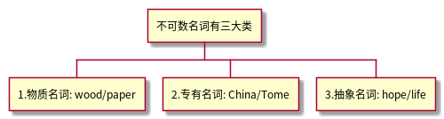

《英语语法简单到不行》
Table of Contents
1 Part 1 基础概念
1.1 Chapter 01 基础动词
1.1.1 Unit 01 动词基本概念
- 语法口诀一念就会
动词实在很孤僻: 除非有连接词连接2个以上的动词，否则通常一个句子只有一个动词。
be动词、一般动词王不见王: 动词有两大类，"be"动词和“一般动词”，不可同时使用，必须择一而用。
硬要一起做进行，必须加上ing!: 一般动词必须加上ing才可与be动词形成"现在进行时" -> be动词 + V-ing（正在…）
- Step 1 “文字”剖析关键概念
动词分成两大类：
一、be动词：am / is / are
二、一般动词：其他所有与am/is/are不同的动词，通称为一般动词，又叫做普通动词。
例句：
1, I am going to the supermarket.
2, She is writing a letter to Tom.
- Step 2 "图解"语法一看就懂
be动词和一般动词的结合用法
be动词 一般动词 am/is/are
eat(吃) / drink（喝）/ play（
玩）/ walk（走）等be动词 + V-ing - Step 3 例句演练
- I am a doctor.
- You are very smart.
- He plays baseball. He is playing baseball.
- I play the piano. I am playing the piano.
- I am a doctor.
- Quiz 语法练习
My twin brother, Tom, and I have different hobbies. He likes sports,
especially baseball and basketball. He is on the school baseball team
and practices baseball two hours a day. He enjoys watching ball
games on TV. Yao-Ming and Micheal Jordan are his favorite players.
1.1.3 Unit 03 动词时态–过去时
- 一、be动词–过去时
- 三、一般动词–过去时的规则变化
- 表 1:
过去时 -> 动词+ed 过去时 -> 动词(去y)+ied 现在式 过去式 现在式 过去式 call called study studied talk talked hurry hurried watch watched fry fried cry cried - 表 2:
过去式->动词(词尾e)+d 过去式->动词重复词尾+ed 现在式 过去式 现在式 过去式 like liked stop stopped love loved shop shopped hate hated save saved - 表 3:
现在式 过去式 现在式 过去式 cut cut hurt hurt put put cost cost let let quit quit hit hit shut shut - 表 4:
现在式 过去式 read[ri:d] read[red] - 表 1:
- 四、一般动词–过去时的不规则变化
- 五、不规则变化–技巧篇1
ought aught buy bought catch caught think though teach taught bring brought i-e -> o-e ea -> o-e ride rode bear bore rise rose tear tore write wrote wear wore drive drove speak spoke break broke - 六、不规则变化–技巧篇2
d -> t ay -> aid lend lent say said send sent lay laid spend spent pay paid build built repay repaid ow -> ew ee -> e-t grow grew keep kept know knew feel felt blow blew sleep slept throw threw meet->met/feed->fed see -> saw - 七、不规则变化–熟记篇
现在式 过去式 现在式 过去式 go went do did see saw get got eat ate win won have/has had take took shake shook hear heard find found make made fall fell sell sold tell told leave left light lit lead led stand stood understand understood fly flew hold held lose lost mean meant feed fed - 八、一般动词–过去时否定句&疑问句
1.1.4 Unit 04 动词时态–将来时
- 语法口诀一念就会
将来时，动词前面加will，动词记得现原形：
will可换be going to：
- 补充
- 一、往返动词
通常用"现在进行时"代替"将来时"，come、go、start、leave、leave for都属于往返动词。
- Christmas is comming! 圣诞节快到了！
- The train is starting. 火车即将要开了！
- Christmas is comming! 圣诞节快到了！
- 二、表示年龄要用will；不用be going to
- I will be fifteen years old next year.
- I will be fifteen years old next year.
- 三、第一人陈(I/we)可用shall
- Shall we go to the party tonight?
- Shall we go to the party tonight?
- 四、表示即将发生可用be about to
- We are about to start.
- The plane is about to take off.
- He is about to begin his term as President.
- We are about to start.
- 五、表示计划或安排好的动词可用“be动词+to+原形动词”
- We are to meet at the gate.
- We are to meet at the gate.
- 一、往返动词
1.1.5 Unit 05 动词时态–进行时
- 一、进行时的用法
- 语法口诀一念就会
进行时，要将be动词加前头：
一般动词再加ing：
- Step 1 “文字”剖析关键概念
现在、过去或将来某个时刻正在发生、进行中，用be+V-ing构成进行时。
- 现在进行时：am/is/are + V-ing
They are playing basketball in the park now. - 过去进行时：was/were + V-ing
You were watching TV, and he was reading newspaper then. - 未来进行时：will + be + V-ing
I will be doing my homework when Mum comes home two hours later.
- 现在进行时：am/is/are + V-ing
- Step 2 “图解”语法一看就懂
一般动词找be动词来帮忙，变成：be动词+ V-ing 正在~
V-ing变化规则：
常见 需注意 1. V. + ing 1. 短元音+辅音词尾 -> 重复词尾+ing 2. 词尾e不发音->去e+ing.不可以去y+ing 2. 特例 摇身一变试试看：
- V + ing
一般动词 进行时 一般动词 进行时 do doing help helping wash washing 特例 sing -> singing - 去e加ing
一般动词 进行时 一般动词 进行时 come coming have having ride riding write writing close closing - 重复词尾
一般动词 进行时 一般动词 进行时 cut cutting put putting run running sit sitting plan planning swim swimming shop shopping stop stopping begin beginning mop mopping 特例 eat长元音->eating - 不可去y+ing
一般动词 进行时(y+ing) 现在式(去y+ies) 过去式(去y+ied) study studying studies studied cry crying crise cried try trying tries tried - 特殊单词
一般动词 进行式 一般动词 进行式 (1) c + king picnic picnicking mimic mimicking (2) ie -> 去ie为y ing tie tying die dying lie lying vie vying (3) 词尾ee/ye + ing (不可去e) agree agreeing dye dyeing - V + ing
- 补充：进行时相关重要概念
- 以下表示“存在、所有、感觉”之动词通常不用进行时：
have/know/remember/see/hear/feel/forget/love/like/hate/seem/wish/want
比较:
不用进行时 可用进行时 see
be watching
be looking (at)hear be listening (to) - 往返动词如come/go/leave/leave for/start……通常用进行式be动词+V-ing表示“未来”
- 以下表示“存在、所有、感觉”之动词通常不用进行时：
- 语法口诀一念就会
- 二、进行时–否定句&疑问句
1.1.6 Unit 06 连缀动词
- 语法口诀一念就会
be动词有am/is/are三个字，一般动词那么多：
连缀动词过来帮我做形容：
看起来 听起来 闻起来 尝起来 感觉：look/sound/smell/taste/feel
似乎 变得 还不错：seem/become/get
- Step 1 "文字"剖析关键概念
连缀动词：能转介来帮助be动词做形容的一般动词，因为be动词之表示状态，通过连缀动词能使句子变得生动
- 其后不可加副词，例如：
She is happy.
-> She feels happy.
-> She becomes happy. - 其否定句/疑问句仍须按照一般动词的原则用助动词来形容；不可像be动词直接加not，例如：
She feels happy.
-> She doesn't feel happy. - 另外，连缀动词 + like + 名词……，用来表示“像……”，like在这里当介词（像……），例如：
It looks rainy.
-> It looks like rainy.
- 其后不可加副词，例如：
- Step 2 “图解”语法一看就懂
- be动词和形容词的关联用法：
be动词
+
形容词 like（像）+ 名词 - 形容词和副词的关联用法：
一般动词 + 副词 look at + 副词
look at 为一般动词，勿混淆。意思为注视/看着，需用副词修饰- 连缀动词和形容词的关联用法：
连缀动词
look/sound/smell/taste/feel/seem/become/get+
形容词
- be动词和形容词的关联用法：
1.2 Chapter 02 疑问句
1.2.2 Unit 02 W/H疑问句
- Step 2 “图解”语法一看就懂
- what/who:
what who 问职业 问关系 回答时用a/an 回答时用所有格my... What's that man? -> Who's that man? -> He's a teacher My teacher. - what/who:
- 补充：其他延伸疑问句
- what + 名词：what从疑问代词 -> 疑问形容词
- 问时间：几点、星期、日期、月份、季节、年……
What time is it? It's seven o'clock.
What day is it? It's Wednesday.
What date is it? It's January 1st. - 问颜色
What color is it? It's blue. - 问种类、形式
What kind of music do you like? I like popular music.
- 问时间：几点、星期、日期、月份、季节、年……
- how + 形容词/副词
- 问年龄
How old are you? - 问数量
how many + 可数名词
how much + 不可数名词 - 问频率
How often do you go to a movie? - 问时间
How long does it take to the park?
How soon can we have dinner? - 问速度、长度
How fast can you run?
How long is the table?
- 问年龄
- what + 名词：what从疑问代词 -> 疑问形容词
1.2.3 Unit 03 Yes/No疑问句
- Step 1 “文字”剖析关键概念
- be动词问句：
- 现在时：Am/Are/Is开头的问句
Are you a student? Yes, I am. - 过去时：Was/Were开头的问句
Were you at home last night? No, I wasn't.
- 现在时：Am/Are/Is开头的问句
- 助动词问句：
- 现在时：Do/Does
Do you have a pencil? No, I don't. - 过去时：Did
Did you get up late this morning? Yes, I did. - 将来时：Will
Will you go to a movie tonight? No, I won't. - 完成式：Have/Has
Have you washed the dishes? Yes, I have. - 其他：Can/Should…
Can you ride a bike? Yes, I can.
- 现在时：Do/Does
- be动词问句：
- Step 2 “图解”语法一看就懂
Yes/No问句有两大类：
be动词问句 助动词问句 Am/Are/Is/Was/Were Do/Does/Did/Can/Should/Will...
1.3 Chapter 03 名词
1.3.1 Unit 01 名词–基本概念
1.3.2 Unit 02 可数名词
- 一、普通名词的复数变化
- 语法口诀一念就会
可数规则s/es，还有同形不会变
不规则中有规则，技巧帮忙变一变
- Step 1 “文字”剖析关键概念
可数名词的复数变化方式：
- 通常在词尾加s/es
pen -> pens / watch -> watches - 单复数同形不变：
a fish -> two fish / a Chinese -> two Chinese - 不规则变化，需特别以技巧熟记：
- 词尾变成en或ren
man -> men / ox -> oxen - 词中有oo -> ee
foot -> feet - 词尾有ouse -> ice
mouse -> mise
- 词尾变成en或ren
- 通常在词尾加s/es
- Step 2 “图解”语法一看就懂
一、普通名词的复数变化
规则变化 不规则变化 1.词尾+s 需熟记，有技巧不规则中有规则
词尾变：en/ren/ice
词中变：ee
2.词尾x/o/s/z/sh/ch + es 3.辅音+y -> 去y+ies 4.词尾f/fe -> 去f+ves 5.单复数同形 二、摇身一变试试看–规则变化
- 词尾+s，念成有声的[Z]或无声的[s]
单词 +s 发音 单词 +s 发音 pen pens [z] book books [s] apple apples [z] desk desks [s] sister sisters [z] cat cats [s] boy boys [z] lip lips [s] girl girls [z] month months [s] - 词尾x/o/s/z/sh/ch + es念成[iz]
box -> boxes tomato -> tomatos glass -> glasses buzz -> buzzes dish -> dishes watch -> watches 注意:
以下词尾的复数变化比较特别，请多加留意：
词尾是元音字母+ o -> 通常+ es / 词尾是辅音字母+ o -> 只需+ s
词尾是ch发[tf]的音 -> 通常+es / 词尾是ch不发[tf]的音 -> 只需
+ s。例如：zoos / bamboos / radios / stomachs，例外：pianos/
photos- 元音+ y -> 去y + ies [iz]
单词 去y + ies 发音 单词 去y + ies 发音 baby babies [iz] family families [iz] city cities [iz] story stories [iz] - 词尾f/fe -> 去f/fe + ves [vz]
单词 去f/fe -> ves 发音 wife wives [vz] knife knives [vz] leaf leaves [vz] 例外：roof -> roofs [s]、chef -> chefs [s]、chief -> chiefs [s] - 单复数同形
fish sheep deer Chinese Japanese Swiss 补充：习惯用复数的词有glasses、shoes、trousers、scissors、stockings
三、摇身一变试试看–不规则变化
- 词尾有en/ren
单词 不规则变化 单词 不规则变化 man men woman women policeman policemen ox oxen child children - oo -> ee
单词 不规则变化 单词 不规则变化 foot feet tooth teeth goose geese - ouse -> ice
单词 不规则变化 单词 不规则变化 mouse mice louse lice - 特殊词(除外)：
bacterium -> bacteria 细菌
phenomenon -> phenomens 现象
paparazzo -> paparazzi “狗仔”
- 词尾+s，念成有声的[Z]或无声的[s]
- 语法口诀一念就会
- 二、集合名词
1.3.3 Unit 03 不可数名词
- Step 1 “文字”剖析关键概念
不可数名词可以分为以下三大类：
一、物质名词：通常是材料、食品、饮料以及液体气体的名称：
wood gold silver paper meat pork beef fish water tea coffee milk juice ink wine food bread rice suger salt money air gas 常用的单位词：
a bowl of a plate of a bag of a box of a loaf of （一条的） a piece of a bottle of a spoon of a pair of a package of 二、专有名词：字首需大写
- 人名：Tom/Mary
- 国名：China/America
- 地名：Beijing/New York
三、抽象名词
art life wisdom time news physics hope friendship knowledge homework - 人名：Tom/Mary
- “图解”语法一看就懂

1.3.4 Unit 04 名词的修饰语
- 一、常见的修饰语
- 语法口诀一念就会
many, few, several, both, every必须数一数
much, little不可数
a lot, some, any, all, no随你数不数
- Step 1 “文字”剖析关键概念
名词修饰语主要可用来：
一、修饰“可数名词”：如many, a few, few, several, both, every等，注意！every的后面恒为可数单数名词。
二、修饰“不可数名词”：如much, a little, little等。
三、修饰“可数、不可数名词”皆可：如a lot of, lots of, some, all, any, no
- Step 2 “图解”语法一看就懂
名词修饰语和修饰对象：
many/a few/several/both/every + 可数名词 much/a little/little + 不可数名词 a lot of/lots of/some/any/all/no + 可数不可数皆可
- 语法口诀一念就会
- 二、易混淆的修饰语